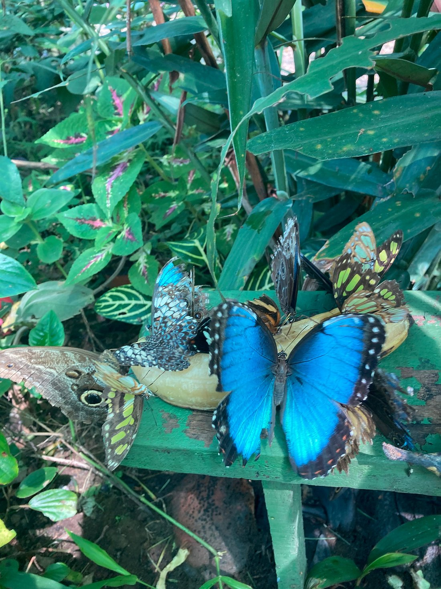

GALERÍA FOTOGRÁFICA


Horario de visita: 8:00 a.m. a 4:00 p.m.
Nuestro mariposario tropical es una de las atracciones más recientes en la región, ofreciendo una experiencia única en contacto con la naturaleza tropical.
Este pequeño pero innovador jardín alberga cerca de 20 especies locales de mariposas, entre ellas la majestuosa Morfo azul y la emblemática mariposa ojo de búho.
El recorrido incluye zonas de sombra donde habitan especies que prefieren ambientes frescos, y sectores iluminados por el sol, ideales para observar mariposas activas que buscan la luz.
Recomendamos realizar la visita por la mañana, cuando la actividad de las mariposas es más intensa gracias al calor matutino.
Vive una experiencia inolvidable rodeado de las especies más hermosas de Costa Rica.
